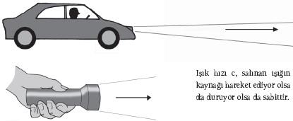
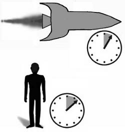

İlerleme, düzensizlik ve Einstein’ın elastik saatleri
Beyninizin derinliklerinde striatum denilen bir doku tabakası yatmaktadır. Bu nöron topluluğu, şu sıralar bilebildiğimiz kadarıyla, zamanın bulunduğu tek yerdir. Hayatınızın ilk anlarının kayıtlarını tutar; içinizde, çocukluğunuzun önemli ve büyüleyici bir anlar seçkisi olarak aktığı, yetişkinlik hayatınızın ise gereği gibi takdir edilemeyecek kadar hızlı geçtiği hissini uyandırır.
Fakat bu hislere çok da kıymet vermemelisiniz. Striatumun hediyesi aslında zamanın geçtiği izlenimini –hatta belki de yanılsamasını– uyandırmaktır. Sorun, bu dokunun zamanı ölçmesinin bilinçli zihninizde olup bitenlere dayanıyor olmasıdır. Ne zaman bilinçli bir eylem gerçekleştirseniz, söz gelimi çaydanlığın altını yaksanız beyninizdeki çeşitli elektrik devreleri hep birlikte yükselir. Striatum bu eş zamanlı sinyalleri kaydeder ve bunun sonucunda ön korteks gibi alanlardan gelen elektrik sinyali örüntülerini not almaya başlar. Çaydanlığın içindeki suyun ne kadar zamanda kaynadığıyla ilgili kavrayışınız bir araya gelmiş elektrik sinyallerinin ölçümünden başka bir şey değildir.
Evde durum bu kadar kötü değildir; burada bu hissi mutfak saatine şöyle bir göz atarak ayarlayabilirsiniz. Fakat saatlere erişiminiz engellendiğinde işler ters gitmeye başlar. 1960’ların başlarında Fransız jeolog Michel Siffre saatini çıkarıp kendisini 60 gün boyunca karanlık bir mağaranın içine tıktığında, zamanın geçtiği yönündeki algısı çözülmüştü. Deneyin sonuna gelindiğinde Siffre’ye bir saat dört ya da beş saat gibi geliyordu. Valyum, kafein ya da LSD gibi uyuşturucular da zaman hissinizde benzer bir terslik yaratacaktır. Hafızanızda da.
Genellikle meşgul zamanlarda, hayatın göz açıp kapayıncaya kadar geçtiğini düşünürüz; ama deneyler bunun ancak meşgulken böyle olduğunu göstermektedir. Sonradan varoluşunuz üzerine düşündüğünüzde, meşgul dönemleriniz gözünüze daha uzun görünecektir. Çocukluğunuzun şimdi size, o uzun, altın yaz günleri gibi görünmesinin sebebi budur; o zamanlar deneyimleyecek çok fazla şey olduğu için hayat heyecan vericiydi; beyniniz de bu yüksek sinyal seviyelerinin uzun zaman dilimlerine karşılık gelmesi gerektiğini düşünmektedir. O halde zamanın akışını kavrayışınız, her zaman kuşkulandığınız gibi güvenilmezdir. Fakat öyle anlaşılıyor ki zamanı algılamayla ilgili sorunlarımız, zaman kavrayışının kendisiyle olan sorunlarımızın yanında solda sıfır kalmaktadır.
Evrensel Zaman
Bu zamana dek zamanı halletmiş olmamız gerektiğini düşünebilirsiniz. Nihayetinde zaman evrensel olarak anlaşılan bir kavramdır; bütün kültürler zamanı bilir, onun hakkında konuşur, onu hisseder. Zamanın ne anlama geldiğini bin yıllardır düşünüyoruz. Örneğin MÖ 350’de Aristo zaman kavramını oturtma yönündeki ilk girişimlerinden birini içeren Physics adlı bir kitap yazmıştı.
Aristo’nun zamanla ilgili çalışması bir soruyla başlıyordu. “Öncelikle,” diyordu, “zaman var olan şeyler sınıfına mı aittir, yoksa var olmayan şeyler sınıfına mı?” MS ikinci bin yılda bu hâlâ cevaplanmamış bir sorudur. Zihinlerimiz zamanın geçişine aldanıyorsa bunun sebebi zamanın bir yanılsama olması olabilir. Yunanlılardan bugünkü modern fiziğe dek zaman hakkında varılan sonuç değişmeden kalmıştır: Zaman en azından değişimle ilgilidir. Zaman içinde bir şey değişip başka bir şeye dönüşür.
<>
“Öncelikle, zaman var olan şeyler sınıfına mı
aittir, yoksa var olmayan şeyler sınıfına mı?”
ARİSTO
<>
Fakat Aristo’nun Yunan meslektaşları evrendeki temel kavram olarak dairelere kafayı takmışken, yani zamanın daireler, döngüler halinde akıyor olması gerektiğini söylüyorken, modern fizik çizgisel süreçlere odaklanmıştır: Başlangıçtan sona varılır, Büyük Patlama’dan kozmik kapanışa ulaşılır. Zaman içinde bu durum zamanın okunun ezici bir biçimde hissedilmesi anlamına gelir: Bizim evrenle ilgili modern bakış açımıza göre zaman geri çevrilemez bir biçimde ileriye doğru akmaktadır. Yumurtalar kırılır, kırılmadan önceki hallerine geri çevrilemezler. Saatler ileriye doğru ilerler, kendiliğinden geriye gittikleri olmaz.
Sistemlerin geri çevrilemez bir biçimde düzensizliğe doğru ilerlediği bu değişim süreci termodinamik zaman oku olarak bilinir. Kaynağında fiziğin en temel yasalarından biri vardır: Termodinamiğin ikinci yasası. Bu yasa bir bütün olarak, evrenin bir düzenin çözülmesi süreci içine sıkıştığını söylemektedir. Bir sistemdeki düzenliliğin ölçüsü olan entropi her zaman artmaktadır.
Düzen ve Düzensizlik
Zamanın oku çok çeşitli kaynaklardan çıkıyor olabilir. Örneğin “kozmolojik zaman oku” evrenin yaratılışının, her şeyin kesin bir düzen içinde olduğu özel bir düşük entropi durumunun bir adım ötesi olduğunu göstermektedir. İş biraz tam anlamıyla çözüme ulaştırılmış bir Rübik Küpü’nün meraklı bir çocuğun eline tutuşturulmasını andırmaktadır; zaman geçtikçe evren daha da düzensiz bir duruma doğru ilerlemektedir; tıpkı Rübik Küpü’nün üzerindeki kesin düzenin, yerini karman çorman bir renk çorbasına bırakması gibi. Bazı şeyler, örneğin galaksiler, genellikle ince bir güzelliği olan yapılarıyla düzenli görünseler de bir bütün olarak evrenin düzeni azalmaktadır. Evrenin sonu yaratılacak bir düzensizlik olmadığında gelecektir; yani Lord Kelvin’in dediği gibi evren “evrensel bir dinlenme ve ölüm durumuna” ulaştığında.
Aşinası olduğumuz zaman oku, kuantum kuramından da doğabilir. Bir (muhtemelen en popüler) düşünce ekolüne göre, kuantum sistemleri ölçüldüklerinde geri çevrilemez bir “çöküş” yaşarlar. Bu durum, bir kuantum nesnesinin, örneğin bir atomun aynı anda tümüyle farklı iki durumda var olma konusunda gösterdiği dikkat çekici beceriden kaynaklanmaktadır. Örneğin bir atom aynı anda hem saat yönünde hem saat yönünün tersine dönüyor olabilir. Fakat ölçüm yapıldığında, bu ikili durum ikisinden biri olmak durumunda kalır: Ölçüme konu alan atomun ya saat yönüne ya da saat yönünün tersine döndüğü görülecektir; atom aynı anda her ikisini de yapıyor olma durumuna geçmeyecektir.
Gelgelelim zaman okuyla ilgili bu tanımlarda bir sorun vardır. Bizi hiçbir yere çıkarmazlar, çünkü değişim kavramını gerektirirler. Ve değişim de Aristo’nun dikkat çektiği üzere zamanın geçmekte olduğunun işaretidir. Zaman okunu değerlendirerek zamanı tanımlama yolunda gerçekten de hiç ilerleme kaydedemeyiz. Elimizdeki tek şey, görünürde zamanın aldığı yönle ilgili varsayılan açıklamadır. Hatta bu açıklama bile baltalanmıştır. Zamanın oku bireysel deneyimimizin bir parçası olabilir; fakat elimizde bunun zamanı gerçek kıldığına dair bir gerekçe yoktur. Daha da kötüsü gerçek olmadığına inanmak için iyi bir sebebimiz vardır.
Zamanda Bir Gerilme
İnsanı telaşa düşüren bu kavrayış için Albert Einstein’a teşekkür etmeliyiz: Bu kavrayış onun özel görelilik kuramının kalbini oluşturmaktadır. Einstein 1905’te fikirlerini yayınladığında o kadar bilinen bir isim değildi. Özel görelilik devrimci bir çalışmaydı, uzayın tamamının eterle, hayali bir sıvıyla dolu olduğu yönündeki kavrayışı tek bir darbeyle yıkıyordu ve ışık gibi elektromanyetik alanların hareket edebileceği bir zemin sağlıyordu.

IŞIK HIZININ SABİTLİĞİ
Bu noktada, artık aramızdan ayrılmış olan Carl Sagan’ın bir zamanlar dediği gibi sıradışı kuramların sıradışı kanıtlar gerektirdiğini, hal böyleyken özel görelilik kuramının kendisini destekleyen olağandışı kanıtlara dayanan birkaç kuramdan biri olduğunu belirtmek gerekir. Birazdan okuyacaklarınız size saçma gelebilir; ama ciddiye almanız için her tür sebep mevcuttur.
Özel göreliliğin merkezinde şu yatmaktadır: Fizik kanunları evrende nasıl hareket ediyor olurlarsa olsunlar herkes için aynı şekilde geçerlidirler. Bunun en önemli sonucu ışık hızının evrensel olarak c diye bilinen bir sabit olmasıdır. Saatte 100 kilometre hızla size doğru yol almakta olan bir aracın tepe ışıklarının çıkardığı ışığın hızını ölçecek olursanız ışık hızı c olacaktır; saatte 100 kilometre (62 mph) artı c değil. Işık hızı, ışığı salanın ve gözlemcinin göreli hareketine bağlı olarak değişmez. c sabitinin olağandışı yönü şudur: Koşullar gerektirdiğinde diğer her şey değişir ve bunlara zaman da dahildir. Zamanın geçişi, zihninizde olduğu kadar gerçek, fiziksel dünyada da esnek bir gelişmedir.
Trafik ışıklarının bulunduğu bir kavşağın 100 metre ötesinde durduğunuzu düşünün. Şaşırtıcı derecede dakik bir kronometreniz, bir cetveliniz ve bir de şimşek hızında refleksleriniz var. Işık değişip kırmızı oluyor ve siz de ilk kırmızı ışık değişiminin sizin metrenizde ne kadar yol aldığını ölçebiliyorsunuz. O sırada yanınızdan bir araba geçiyor, kavşağa doğru saatte 100 kilometre hızla ilerliyor. Arabanın ön koltuğunda oturan yolcu da sizinle aynı becerilere ve aynı donanıma sahip, o da aynı ölçümü gerçekleştiriyor: Işığın cetvel boyunca ne kadar zamanda yol aldığını ölçüyor.
Her ikiniz de ışığın hızını ölçtünüz. Einstein her ikinizin de aynı sonuca ulaşmış olmanız gerektiğinde ısrar eder. Fakat araba yanınızdan geçip trafik ışığına doğru yol aldığında, içindeki cetvel de onunla birlikte yol aldı. Işık arabanın içindeki cetvelin uç noktasına vardığında, cetvelin ucu trafik ışıklarına yaklaşmıştı; bu yüzden de ışığın o cetvel üzerinde alması gereken yol, sizin cetvelinizde alması gereken yola kıyasla daha kısa bir yoldu. Arabanın içindeki yolcunun ölçümlerine göre ışığın daha hızlı olması, bir metrelik bir cetveli aşmayı daha kısa zamanda tamamlamış olması gerekir. Peki o halde, nasıl olur da ikiniz aynı sonuca ulaşmış olabilirsiniz? Cevap farklı durumlarda zamanın geçişiyle ilgilidir. Sizin saatinizle kıyaslandığında, arabanın içindeki saat yavaş ilerlemektedir. Dolayısıyla ışık belirgin olarak daha az mesafe aldıysa da zaman ölçümü sizin yaptığınızdan fazla olmuştur; bu da oluşan etkiyi ortadan kaldırmıştır.

ZAMAN GENLEŞMESİ
Bu, bir yanılsamalar bileşiminin sizi doğru sonuca götürdüğü bir el sürçmesi değildir. Zaman genleşmesi olarak bilinen bu etki, sadece saat, ışık hızına yakın bir hızda hareket ediyorsa dikkat çekici bir biçimde fark edilir hale gelir; fakat sizinle göreli bir hareket içindeki saatin elinizde tuttuğunuz saatten gerçekten de daha yavaş işleyeceği kesindir. “Saat” kelimesi zamanın geçişine işaret eden her şeyi ifade edebilir. Bu ifadeyi kesip parçaladığınızda her tür rahatsız edici sonucun ortaya çıktığını göreceksiniz.
Yaşlanan Akrabalar
Hemen kavranabilir olan bir şeyle başlayalım. Pierre ve Marie Curie’nin yaklaşık 100 yıl önce keşfettiği radyoaktif bir malzeme olan polonyumdan bir tutam aldınız diyelim. Polonyumun bir biçimi olan Polonyum 209’un yaklaşık 100 yıl süren bir yarı ömrü vardır; yani bir asır sonra atomlarının yarısı bir radyasyon patlaması salacak ve daha istikrarlı atomlara dönüşeceklerdir.
Curie çifti bu malzemeyi keşfettiklerinde birbirine benzer iki tutam almış olsalardı, bir tutamı Paris’teki laboratuarlarında bırakıp diğerini ışık hızının 0.99’u oranında bir hızla dünyanın etrafında yörüngeye soksalardı, bu tutam Dünya’ya bugün dönseydi iki tutamın saldığı radyasyon miktarında dikkat çekici bir yön olduğunu keşfederdik. Paris’te kalan tutam bu 100 yıl içinde radyoaktif polonyum atomlarının yarısını kaybetmiş olacaktır. Mesele şudur ki ikizinin, uzaya gönderilip geri dönen tutamın sadece yüzde 10’u çürümüş olacaktır.
Bunun sebebi, Dünya’yla göreli hareketin ışık hızının 0.99’u oranında gerçekleşiyor olmasıdır (ivme kazanma, ivmenin azalması ve dönme gibi meseleleri bir kenara bırakırsak); bu yüzden bu tutam için zaman yavaşlamıştır. Bu tutamın “saati”, atomlarının radyoaktif çürümeyi yaşama hızıyla ölçüldüğü biçimiyle, gezegenden hiç ayrılmamış olan ikizinin hızının sadece yüzde 14’ü kadar bir hızla işlemektedir. Bu tutamın radyoaktif atomlarının birçoğunun sapasağlam kalmış olmasının sebebi de budur. Herhalde bunu sindirmek bir parça zor olacaktır. Fakat şimdi sırada gerçekten hiç anlaşılamayacak bir şey var.
Pierre ile Marie Curie’nin iki polonyum tutamını muhafaza ettiğini varsayalım. Pierre uzay yolculuğunda tutamlardan birine eşlik edecektir, Marie ise kendi tutamıyla birlikte Paris’te laboratuarda kalacaktır. Bilim insanlarının bedenlerinde de iç saatler vardır; tıpkı polonyum için söz konusu olduğu gibi, onların atomları da zaman geçtikçe değişir; bir kalp atışı oluştururlar örneğin, bazı hücreler belli sayıda bölünmeyi gerçekleştirdikten sonra kapanır. Biyologlar yaşlanma ve ölümün kökeninde bu fenomenin yattığına inanmaktadır.
Radyasyonun olası feci etkilerini görmezden gelelim; Pierre’in bedenindeki atomlar, dolayısıyla hücreler ve kalp atışı Marie’ninkine kıyasla daha yavaş akacaktır; tıpkı polonyumun radyoaktif çürümesinin Dünya’da daha yavaş gerçekleşmesinde olduğu gibi. Pierre 100 Dünya yılı sonra geri döndüğünde Marie çoktan ölmüş olacaktır, fakat Pierre’in bedeni sadece 14 yıl yaşlanmış olacaktır. Buradan hemen çıkarabileceğimiz bariz bir sonuç, doğru kaynaklarla yürütüldüğünde, geleceğe doğru bir zaman yolculuğunun tümüyle mümkün olduğudur. Fakat bu noktadan hareket edip Einstein’ın özel görelilik kuramının bir ortak gelecek kavramını kenara bıraktığı yönündeki şaşırtıcı kavrayışa doğru ilerlemek için küçük bir adım atmak yeterli olacaktır. Ortak bir şimdi ve ortak bir geçmiş de yoktur.
Kayıp Zamanın Peşinde
Durup trafik ışıklarına bakıyorken iki olayın aynı anda gerçekleştiğini gördüğünüzü söyleyebilirsiniz. Fakat biraz önce görmüş olduğumuz gibi, arabanın içindeki yolcunun saati farklı bir hızla ilerlemektedir. Bu iki olayın zamanlamasıyla ilgili olarak edindiğiniz bilgi pekâla farklı olacaktır. Daha da kötüsü, iki olayın A ile B’nin farklı zamanlarda gerçekleşmiş olduğunu; B’nin A’dan sonra gerçekleşmiş olduğunu görebilirsiniz. Sizinle göreli bir hareket içindeki arkadaşınızın nasıl bir hareket içinde olduğuna bağlı olarak arkadaşınız A’nın B’den sonra gerçekleştiğini görmüş olabilir. Bunun feci sonuçlara yol açması olasıdır: A’ya B’nin yol açmış olduğunu düşünüyorsanız önce B’nin gerçekleştiğini görmüş olan birine bunu nasıl açıklayabilirsiniz?
Geçmiş, şimdi, gelecek, eş zamanlılık, neden ve sonuç; hiçbir şey evrensel değildir. İş zamana ve zamanın yönettiği süreçlere geldiğinde, siz ve striatumunuz yalnızsınız. Gelgelelim bütün bu kargaşaya verilebilecek tek bir cevap vardır ve bu cevap birçok fizikçi, birçok filozof için çekici olan bir açıklamadır. Zamanın var olduğu kavrayışını bir kenara bırakabiliriz.
Bu 17. yüzyıla dek uzanan bir tartışmadır. Newton’ın Hıristiyanlık inancı, uzay ve zamanın Tanrı’nın karakterini yansıtmasını gerektiriyordu; Newton, zamanı gerçek bir varlık, evrendeki her şeyden bağımsız olarak hareket eden bir mutlak olarak değerlendiriyordu. Fakat büyük rakibi Gottfried Leibniz zamanın insan yapımı bir şey olduğuna inanıyordu. Leibniz yapabileceğimiz tek şeyin şeylerin uzaydaki konumlarının birbiriyle nasıl bir ilişki içinde olduğunu, bu ilişkinin nasıl geliştiğini tanımlamak olduğunu söylüyordu. Örneğin bir saatin sarkacının ileri geri sallanması ve saatin kollarının buna cevaben kadran üzerinde dolanması işe yarar; ama bu, saatin aslında var olan bir şeyi ölçtüğü anlamına gelmez. Bu bakış açısıyla yaklaşırsak, zaman, dünyayı anlama arzumuzdan doğan bir şeydir; fakat yararlı bir odaklanma aracından daha yararlı değildir. Uzamsal bir kavram olan “yukarı” gibi, zaman da bir kestirmedir. Londra’daysam “yukarı” belli bir yönü işaret edecektir; ama aynı yön Sydney’de aslında “aşağı”dır.
Bu bağlantı uygun bir örnek olmaktan biraz daha ileri gider. Einstein genel görelilik kuramını yayınladığında (“özel kuram”daki “özel” özel, yani belli bir duruma işaret etmektedir, özel bir anlama değil), zaman ile uzay arasında bir bağlantı olduğunu öne sürmüştü. Zamanın evrendeki dört boyuttan biri olduğunu söylüyordu. Diğer üç boyut fiziksel bedeninizin hareketinden aşina olduğunuz boyutlardır: yukarı ve aşağı, ileri ve geri. Aradaki tek fark, bilinçli yaratıklar olarak bizlerin uzamsal boyutlarda nasıl hareket edeceğimizi seçerken zaman içindeki hareketimiz üzerinde hiçbir kontrolümüzün olmamasında yatmaktadır.
Uzayı ve Zamanı Esnetmek
Einstein’ın dört uzay ve zaman boyutu –hep birlikte uzay-zaman olarak bilinirler– eğilip bükülebilen, katlanabilen, kıvrılabilen hatta içlerinde kütlesi ya da enerjisi olan bir şey tarafından yırtılabilen bir parça kumaş olarak düşünülebilir. Bu temelden yola çıkarak genel görelilik, kozmosun özelliklerini görülmemiş bir doğrulukla tanımlayan denklemleri donanımımıza katmış; evrenin nasıl işlediğini bulup ortaya çıkarmamızı, çok çok uzak mesafelere uzay araçları göndermemizi ve Dünya’da nerede olduğumuzu söyleyecek küresel konumlama uyduları yelpazesi yaratmamızı sağlamıştır. Fakat herhalde hepsinin en ilginci, Einstein’ın dört boyutlu dokusunun esnekliğinin zamanın kökenine işaret ediyor olmasıdır.
Bir kara deliğin muazzam derecede güçlü bir kütleçekim alanına sahip olması, merkezinin yakınlarında, kara delikten uzaklaşmak için gerekli ivmenin ışık hızından daha fazla olduğu küresel bir bölge bulunduğu anlamına gelmektedir; ulaşması imkânsız bir ivmedir bu. Işık dahil hiçbir şey bu bölgeden dışarı çıkamaz; bu yüzden de bu sınırların ötesine geçen hiçbir şey hakkında bilgi edinemeyiz. Bu durum, bu bölgeye de ismini vermiştir: Olay ufku.
Olay ufkunda zaman esnemesi sonsuzdur. Siz olay ufkuna doğru düşerken, güvenli bir mesafeden gözlem yapmakta olan biri, zaman ona göre sizin için sonsuz derecede yavaş aktığından hareketlerinizin yavaşladığını, sonra da donduğunu görecektir. Sadece gözlemcinin sonsuz geleceğinde olay ufkuna varırsınız, dolayısıyla gözlemcinin görüş mesafesinden hiç çıkmazsınız. Öte yandan sizin deneyiminiz son derece dramatik olacaktır. Bedeninizin muazzam kütle çekim kuvvetlerinden sağ çıkması son derece ihtimal dışıdır; fakat sağ kalırsanız nihayetinde, göreliliğe göre uzay-zamanın çökmesi diyebileceğimiz şeyle karşılaşırsınız. Kara deliğin merkezindeki “tekillik”, çarpılma sonsuz bir hal alırken ortaya çıkar. Burada bilinen fizik kanunlarının sınırlarına ulaşırız, buradan sonra bu kanunlar işlemez.
Anların Başladığı An
Tekillik sık sık yıkımla ilişkilendirilmiş olsa da yaratılışın anahtarı olduğu düşünülmüştür. 1970’lerin başında Roger Penrose ile Stephen Hawking evrenin kökenini açıklamak için kara delik tekilliğini matematiksel bir kavrayışa uyarlamışlardı. Bir kara delikte her şey tekillik içinde kaybolur. Fakat sürecin matematiğini değiştirdiğinizde, tekillik uzay-zaman dokusunun doğmasına yol açabilir. Otuz yılı aşkın bir süredir bu, Büyük Patlama’ya, zamanın kökenine dair en iyi açıklamamız olarak görülmüştür.
Genel görelilik zamanın nereden geldiğine ışık tutuyorsa da zamanın ne olduğuna dair bize pek fazla bir şey söylemiyor. Dahası, Einstein’ın uzay ve zamanın niteliklerine dair açıklamaları etkileyici olsa da özel ve genel göreliliğin nihai cevap olmadığını biliyoruz.
Tekillik bize bir şey gösterdiyse o da şudur: Genel görelilik birçok senaryoda dikkat çekici derecede iyi işliyorsa da evrenimizdeki en uç fenomenlere dair tatmin edici bir açıklama sunamaz. Kozmosla ve içerdiği her şeyin (kara deliklerin merkezleri dahil) nasıl davrandığıyla ilgili eksiksiz bir betimleme –“kuantum kütle çekimi” olarak anılan bir teoridir bu– hâlâ elimizden kayıp gitmektedir. Anlaşıldığı üzere sorunun kökeninde zamanın niteliği bulunmaktadır.
Kuantum kütle çekiminin göreliliğin zaman kavrayışını kuantum kuramına işlemesi gerekmektedir; kuantum kuramı, moleküller, atomlar ve atom altı parçacıklardan oluşan mikro dünyanın nasıl davrandığıyla ilgili olarak getirdiğimiz en iyi tanımdır. Fakat kuantum kuramı zamanı çok az dikkate alır. Kuramın standart formülasyonunda örneğin, bir sürecin ne kadar sürdüğünü soramazsınız. Sonra şöyle bir sorun vardır ki kuantum kuramı bize atomaltı parçacıkların çoğunun zamanın yönünden bağımsız olarak var olduğunu söyler. Atomaltı parçacıklar aynı anda hem saat yönünde hem saat yönünün tersine dönebildikleri gibi, kuantum durumları da zaman içinde ileriye ve geriye doğru ilerleyebilir. Araştırmacılar, bilginin parçacıkların geleceğinden geliyormuş gibi göründüğü kuantum deneyleri yapmayı bile öğrenmektedirler. Dahası özel görelilik bize kütlesiz parçacıkların, örneğin fotonların ve atom çekirdeklerini birbirine bağlayan glüonların ışık hızında yol aldığını, zamanın geçişini tecrübe bile etmediğini aktarmaktadır.
Büyük fizikçi John Wheeler bir zamanlar “Zaman doğanın her şeyin bir anda olup bitmesini önleme tarzıdır,” demişti. Bunu söylerken gözünü kırpmış olabilir; zamanın belirgin basitliğinin gerçek doğasını yalanladığına inanıyordu. Aziz Augustinus “O zaman zaman nedir? Kimse sormazsa ne olduğunu biliyorum. Ama soranlara açıklamayı istersem ne olduğunu bilmiyorum.”
Augustinus’tan bu yana elde ettiğimiz bütün bilimsel başarılara rağmen, zaman, bir muamma olmayı sürdürmektedir, herhalde bugün bilim adamlarının karşı karşıya olduğu en büyük sorundur. Fakat zaman bir yanılsamaysa en azından yararlı bir yanılsamadır. Sonuçlarıyla ilgili olarak getirdiğimiz yorumlar –geçmişle ilgili hatıralarımız, şimdideki varlığımız ve gelecekle ilgili umutlarımız– insan deneyiminin kalbini oluşturmaktadır. Daha doğrusu striatumunuzun inanmanızı istediği şey budur.